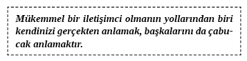

3. BÖLÜM - DEĞERLER: HERKESLE BAĞLANTI KURMANIN ANAHTARI!
Motivasyonel konuşmacılar arasında DÜNYA’NIN EN MÜKEMMELLERİNDEN BİRİ OLAN ZIG ZIGLAR bir keresinde, “İnsanlar ne kadar önemsediğinizi bilene kadar ne kadar bildiğinizi önemsemezler” demişti. Buna katılıyorum. İnsanlar yalnızca zeki ve bilgilisiniz diye sizi dinlemezler. İnsanlar ne kadar önemsediğinizi bildikten sonra dinlerler. Bir insanı, neyin ilginç ve dinlenilir kıldığı konusunda birçok insanla görüştüğümde bu konunun çoğu tarafından anlaşılmadığını öğrendim. ‘Önemse(n)me’nin ne olduğu konusunda ortak bir yanlış anlaşılma vardır. Birçok insan önemsenmeyi başka bir insan tarafından koşulsuz kabul edilmek olarak tanımlar. Ne kadar önemsediğimizi gösterene kadar birçok insan bizi gerçek anlamda dinlemez. İnsanlara onları kabul ettiğimizi ve önemsediğimizi nasıl gösterebiliriz?
1) Başka insanların konuştuklarını dinledikçe, olayları onların bakış açısından görmeyi öğrenirsiniz. Onların yerinde olsaydınız ne düşünürdünüz? İnsanları birey olarak kabul etmek için onlarla aynı fikri düzlemde bulunmak zorunda değilsiniz. Fikirlerine saygı duyabilir ama yine de onlarla aynı fikirde buluşmayabilirsiniz. İnançlarınız ve doğruluğunuz konusunda aynı fikirde olmadan veya uzlaşma zorunluluğu taşımadan empati kurabilirsiniz: Biliyorsunuz ki benim yaşadıklarımı siz de yaşadıysanız ben de tam olarak aynı şeyi düşünebilirdim.
Minneapolis’teki bir çetenin on yedi yaşındaki üyesiyle seansım vardı. Çok ‘kafa’ olduğumu duyduğu için beni görmek istemiş. (Bu tabiri herkesin güvenebileceği biri olarak anlayın.) Seans ücretimi ödeyebilmek için otuz saat çalışmıştı. ‘Nezaketen’ onunla ücretsiz çalışırdım ama o durumda tavsiyelerimi dinler miydi?
Bu genç adamın bir sorunu vardı. Üye olduğu çeteden çıkışın tek yolu vardı: Ölüm. Ya yaşlanıp ölecektiniz ya da çeteden çıkınca ölecektiniz. Çoğu diğer çeteler gibi bu çetenin de hiyerarşik bir yapılanması vardı. Üyelerin, yüksek ve orta seviyeli yönetim gruplarının ve en son çete için çeşitli işlevleri yerine getiren en fazla sayıda çalışan grubunun bir CEO ve birden çok başkan yardımcısını takip ettiği tipik kurumsal piramit yapısındalardı.
Bu çete üyelerine aile oldukları ve aile üyelerine baktığı temasını aşılıyor. Aileye zarar verecek bir şeyin asla yapılamayacağını söylüyor. Bu durumda aileyi bırakmak ihanet ve ölüm nedeni sayılıyor.
Bir terapist olarak bile benim bunun üstesinden gelmem çok zordu. Bir noktada çizdiği bir grafitiyi açıklamasını istedim. Bana baktı ve belirsiz bazı bilgiler paylaştı. İsteğimi yineledim ve bana sadece, “Söylersem seni öldürmem gerekir” dedi. Yüzü sabitti ve tamamen dürüsttü. Ona, “Önemli değil. Zaten sanatla o kadar da ilgili değilim” diye karşılık verdim.
On sekizinci doğum gününde ‘üst düzey yönetim’ grubuna girmek üzereydi. Doğum günü, aileyle kaderinin sonsuza kadar mühürlendiği gün olacaktı. Yasal bir yetişkin olarak çetede kalırsa hiçbir zaman ayrılamayacaktı. Şimdi ayrılırsa da öldürülebilirdi. Ancak on yedi yaşındakiler tam anlamıyla sorumlu olmadıklarından çıkış yolu açabilecek bir detay bulabilirdi. On yedi yaşındakiler henüz üst düzey yönetimde değildiler. Yine de çeteden ayrılmak konusunda çok endişeliydi çünkü bütün arkadaşları, bağlantılı olduğu, önemsediği, baktığı ve hayatının son on bir yılında koruduğu herkes bu çetedeydi.
Çeteden ayrılmak ve aile dışında hayat kurmaya çalışmak için ailesini, sevdiği insanları bırakmak zorunda hissetmenin yürek burkan bir durum olduğunu söyledim. Onu ayrılmak veya kalmak konusunda teşvik etmedim. Sadece seçeneklerini değerlendirmesini sağladım. Ona çete sonrası olası hayatına bakmasını sağlayacak çeşitli senaryolar sundum. Ayrılması için ikna etmeye çalışmayıp kalması için birçok neden sunduğuma inanamadı.
“Çok kafa bir herifsin” dedi bana. “Konuştuğum yetişkinlerden beni tek anlayan sensin. Çeteyi bırakıp ayrılmanın bir yolunu bulacağım. Öncelikle yapacağım birçok şey var ama yine de sağ ol dostum. Gerçekten...”
İki saatin sonunda ayağa kalktı ve elini uzattı. Kimliğini, çıkarlarını ve deneyimlerini tüm dünyadan koruyacağımı biliyordu.
Onun tarafını tutarak ve onun bakış açısını anlayıp kendimi onun yerine koyarak onun için güvenli bir alan yarattım. Çete hayatını onun bakış açısından yaşadım. Düşüncelerimin onun deneyimini istila etmesine izin vermedim. Yaptığı her şeyin başkalarına zarar vermediğini gördüm ve hakkında daha fazla bilgi aradım. Ona çete içinde ve çeteden bağımsız, insan olarak birçok mükemmel şey yaptığını gösterdim.
Sinirleri altüst eden ama çok fazla şey öğrendiğim bir deneyimdi. Hayatımda hiçbir zaman bu kadar tehlikede olmamıştım. Seansı, öğrendiklerimle ve asla bu konu hakkında öğretmemek ve konuşmamak üzere bıraktım. Söylediklerinin benimle güvende olduğunu biliyordu. ‘Kafa’ bir adam olduğumu ‘hissedebiliyordu’.
Sevdiğiniz ve önemsediğiniz insanlara karşı böyle olun ve sonra gelişmeleri görün. İnsanlar için güvenli bir liman olun. Böylece ilişki kurar ve etrafınızdakilerin güvenini kazanırsınız.
2) Yaptıklarına nasıl inanmaya başladıklarını keşfetmek için başka insanların inançları ve düşünceleri hakkında sorular sorun. Bu esnada aşağılayıcı değil, meraklı bir tavır sergileyin. Örneğin, “Hiç bu şekilde düşünmemiştim. Bu sonuca nasıl geldin?” gibi.
İnsanların siyasetten, dinden, cinsel tercihlere kadar inançları ve tavırlarını nasıl edindikleri benim için her zaman şaşırtıcıdır. Yakınlarda Susan Lambert adında bir lise arkadaşımla öğle yemeğinde buluştum. Birbirimizi dokuz yıldır görmüyorduk. Birbirimizi en son gördüğümüzde çocukların uyuşturucudan uzaklaşmalarına yardım etmeye yönelik bir toplantıdaydık. Bu kez farklıydı. Annemin cenazesinde karşılaşınca arayı kapatmaya söz vermiştik. Sonunda bunu yaptık. Uzun uzun konuştuk. Sonunda konu siyasete geldi. Yirmi yıl önce lisede karşılaştığımızda babası çok muhafazakâr bir cumhuriyetçiydi. Bense çok liberal bir demokrattım. Susan’a on yıl önce demokratlığı bırakıp muhafazakârlardan biri olduğumu söyledim ve ağzı açık kaldı.
“Bunu nasıl yapabilirsin?” diye sordu. “Cumhuriyetçiler bir grup ahmak. Beni çok hayal kırıklığına uğrattın!” dedi.
İnanamadım. Eskiden o tam tersini savunurken ben onun bir demokrat olması gerektiğini büyük bir inançla savunuyordum.
“Seni değiştiren ne?” diye sordum.
“Babam cumhuriyetçiler konusunda beynimi yıkamıştı. Çocukken bildiğim tek şeydi ve sonra gerçek dünyaya adım atıp cumhuriyetçi olmadığımı keşfettim. Ben bir demokrattım.
O da hayat boyu inancını değiştirmişti.
İlginç olan insanların siyasi ve dini eğilimlerini değiştirmesinin çok nadir yaşanmasıydı. Amerika Birleşik Devletleri’nde tüm yetişkinlerin %71’i size mezheplerini söyler ve mezhepleri değişmez bir şekilde altı yaşında mensup olduklarıyla aynıdır. Bu politik ve sosyal inançlar için de geçerlidir.
Biriyle tanıştığınızda ve şu an inandıklarına nasıl inanmaya başladıklarını bilmediğinizde peşin hükümlülükten uzak durun. Şu an inandıklarına nasıl inanmaya başladıklarını keşfedin. İnsanların nadiren inandıkları şeyi bilinçli seçtiklerini öğreneceksiniz. Bu inançlar erken yaşlarda zihne kazınır. Eleştirmezseniz ve o kişinin sizinle açıkça paylaştığı şeyi küçümsemezseniz başka birinin zihnine yaptığınız bu tarihî yolculuk en iyi sizinle kurulan bir bağ olarak size dönecek.
3) Bir insanın kişisel değerlerini keşfedin. Değerleriyle karşılaştıklarında bilmelerini sağlayın ki yalnızca daha iyi iletişim kuran biri olmakla kalmayıp daha iyi bir ilişki kurun.
“Hayatta sizin için en önemli şey nedir?”
“Bir ilişkide sizin için en önemli şey nedir?”
“Bir arkadaşta sizin için en önemli şey nedir?”
4) Bu değerlerin o insana ne anlam ifade ettiğini öğrenin. Binlerce insana bu soruları sorarak, çok ilginç bir şey keşfettim. Çoğu insan siz onlara iki üç kez sorana kadar onlar için en önemli değeri size söylemeyecektir. İnsanlar değerli gördükleri şeyler, özellikle değerler ve inançlar konusunda çok korumacı olmaya eğilimlidirler. Bu yüzden hep tamamlayıcı sorular sorarım:
“Hayatta başka ne sizin için önemli?” “Başka ne?”
“Bir ilişkide başka ne sizin için önemli?” “Başka ne?”
“Bir arkadaşta başka ne sizin için önemli?” “Başka ne?”
Üç-dört değer keşfettiğiniz zaman bir insan için gerçekten neyin en önemli olduğunu öğrenirsiniz. Biri size sevgiyi, mutluluğu, sağlığı ve güvenliği en önemli şeyler olarak gördüğünü söylerse, o zaman onun hayatındaki bir numarayı keşfedebilirsiniz. “Bu dört değerden sizin için en önemlisini seçmeniz gerekseydi hangisini tercih ederdiniz?”
O kişinin sağlığın hayatta en önemli şey olduğunu söylediğini hayal edin. O zaman sağlığın o insan için ne ifade ettiğini öğrenmek istersiniz. “Sağlıklı olduğunuzu nasıl anlarsınız?” O insan bunu vücuttaki yağ oranının düşüklüğü, hasta olmamak ya da bir canlılık hissi şeklinde yanıtlayabilir. Size söylediği, o değerin onun için ifade ettiğidir. Artık o insanla ilgili haftalarca veya aylarca havadan sudan konuşarak öğreneceğinizden daha çok şey biliyorsunuz.
Karşınızdaki kişi değerlerini ve inançlarını yani onun için en önemli şeyi sizinle paylaşmış, ruhunu size açmıştır. Çoğu insan değerli gördükleri bir şeyi yalnızca sevdikleri ve güvendikleri bir insanla paylaşır. Kendini birine açmak güven, sevgi ve saygı doğurur. Diğerini gerçekten anlayacak kadar önemseme eylemi sizin kabul ve saygınızı gösterir. Bir kimsenin değerlerini kabul eder ve onlara saygı duyarsanız arada bir köprü oluşturursunuz. Düşündüklerinizi, fikirlerinizi ve hislerinizi herkesin dinlemesini kolaylaştıracak güçlü bir bağ kurarsınız.
İnsanlar değerlerinin kendileri için ne kadar önemli olduğunu bilirler. O değerler ile değer verdiğimiz insanlar için yaşar ve ölürüz. İnsanların en yüksek değerlerine ulaşmalarına içtenlikle yardım etmek isterseniz size açılmaya ve başka kimseye yapmayacakları şekilde gerçek ruhlarını önünüze sermeye eğilim gösterirler. Başkalarının değerlerini kabul etmek koşulsuz sevgi örneğidir. Böyle bir sevgi içtenlikle takdir edilir.
Dört Tür Değer
Amaç değerler ve araç değerler vardır. Amaç değerler duygusal durumlar, eninde sonunda tadına varmak istediğimiz hisler ve içsel deneyimlerdir. Mutluluk, sevgi, neşe, barış, huzur, tutku ve heyecan amaç değerlere örnektir. Araç değerler ‘şeyler’dir. Fiziksel olarak dokunulabilir ve yaşanabilirler. İnsanlar, arabalar, seyahat, oyun oynamak, spor faaliyetlerine katılmak, yürüyüş yapmak, bir nesneye sahip olmak vb. şeyleri içerir.
Araç değerler genellikle (ama her zaman değil) amaç değerlere ulaşmamızı sağlarlar. Başka deyişle bir araç değer olan uzak bir yere seyahat etmek dinginliği yani bir amaç değeri getirebilir.
İki başka tür değer daha vardır. Bunlar yaklaşma ve uzaklaşma değerleridir. Şimdiye kadar biz yaklaşma değerlerini ele alıyorduk. Uzaklaşma değerleri yaşamak istemediğimiz şeyleri ve ruh hallerini içerir.
Bazı insanlar Gelirler İdaresi tarafından denetlenmek istemezler. Bu bir uzaklaşma değeri, aynı zamanda bir amacın aracıdır. Gelirler İdaresi tarafından denetlenmek istemeyenler eninde sonunda kaçınmak istedikleri ruh halini, korku ve anksiyete yaşayabilirler. Korku ve anksiyete amaç değerlerden uzaklaşma örnekleridir. Anksiyete veya korkuya dokunamazsınız ama Gelirler İdaresi’ne geçmişe dönük vergiler için yazacağınız yüksek meblağlı bir çeke dokunabilirsiniz. Bu nedenle denetleme, bir araç değerden uzaklaşma değeridir. Onun getirdiği korku da amaç değerden uzaklaşma değeridir.
Hem amaçlar ve araçları hem de yakınlaşma ve uzaklaşma değerlerini daha derinlemesine anlamak için bir dizi kendini keşif alıştırmalarına katılabilirsiniz. Kendinizi anlamak, diğer insanları anlamak için faydalı bir başlangıçtır. Kendinizi keşfe dikkatlice katılın. Aramak istediğiniz şey kendinizle ilgili yeni öğreneceğiniz bir şeydir.
Alttaki boşluklara veya bir not defterine aşağıdaki soruların cevaplarını yazın. Bu alıştırmada lütfen yalnızca yaklaşma değerlerini kullanın. (Başka bir deyişle ne istemediğinizi ve neden kaçındığınızı yazmayın.)
Yaklaşma Değerlerinizi Keşfedin
1) Sizin için hayatta en önemli şey nedir?
2) Bu şeye sahip olduğunuzu nasıl anlarsınız?
3) Sizin için hayatta başka ne önemlidir?
4) Bu şeye sahip olduğunuzu nasıl anlarsınız?
5) Sizin için hayatta başka ne önemlidir?
6) Bu şeye sahip olduğunuzu nasıl anlarsınız?
7) Sizin için hayatta başka ne önemlidir?
8) Bu şeye sahip olduğunuzu nasıl anlarsınız?
9) 1-3-5-7 no.’lu sorulara bakarak sizin için hayatta bu değerlerden hangisinin en önemli olduğuna karar verin. Başka bir deyişle, yalnızca birine sahip olabilseydiniz hangisini seçerdiniz?
10) 1-3-5-7 no.’lu sorulara bakarak geriye kalan üç değerden sizin için hayatta en önemli olana kadar veriniz. Başka bir deyişle, bu kalan üç değerden yalnızca birine sahip olabilseydiniz hangisini seçerdiniz?
11) 1-3-5-7 no.’lu sorulara bakınız. Geriye kalan iki değerden sizin için hayatta en önemli olana karar veriniz.
12) Sizin için önem sırasına göre dört değerinizi yazınız.
Hayattaki en önemli değerim .............................................
Hayattaki diğer en önemli değerim ....................................
Hayattaki diğer en önemli değerim ....................................
Hayattaki diğer en önemli değerim ....................................
Bu dört değere geri dönüp hepsinin amaç değerler olup olmadığına bakın. (Hisler, duygular, ruh halleri, sevgi, mutluluk, güvenlik, özgürlük, Tanrı/manevi hayat vb.) Amaç değer olmayanları işaretleyip devam edin.
İşaretlediğiniz her araç değer sizde hangi duygusal durum veya ruh hali yarattı? Örneğin, para yazdıysanız para size ne verir? Size özgürlük mü, güvenlik mi, neşe mi, mutluluk mu verir? Araç değerin size hangi ruh halini veya duyguyu verdiğini on iki maddelik alıştırmada o değerin yanına yazın.
Çoğu insan gibiyseniz kendinizle ilgili oldukça şey öğrendiniz. Bu beden içinde yaşayıp, bunca yıldır düşüncelerimizi sürdürüp yine de bizim için önemli olan şey hakkında kendimizi şaşırtabilmemiz tuhaf değil mi? Eğer kendimizi düşündüğümüz kadar iyi tanımıyorsak her gün görüp konuştuğumuz insanlar hakkında ne kadar az şey bildiğimizi bir düşünün. Ayrıca lütfen yalnızca eşlerimizi, sevgililerimizi, çocuklarımızı, arkadaşlarımızı ya da iş arkadaşlarımızı değil kendimizi de düşündüğümüz kadar iyi tanımadığımızı da göz önünde bulundurun.
Bu iletişim sürecinde gelinen anlam, birbirleriyle konuşurken düşündükleri gibi iki insanın birbirlerini çok iyi tanımadıklarıdır. Sonra da yanlış anlaşılmalar, anlaşmazlıklar, kavgalar, her çeşit problem meydana gelir.

Arkadaşlarınızdan birinin hayatındaki en önemli ‘şeylerin’ araç değerler olduğunu düşünebileceğini hayal edin. Başka bir ifadeyle en önemli değerleri parası, evleri, arabaları ve antika koleksiyonlarıdır. Bu onun günlük düşüncelerini ve iletişimlerini nasıl etkileyebilir? Nesnelere değer veren insanların bu nesnelerin onlara hangi ruh halini getireceğini düşünmemeleri mümkün mü? O nesne olmadan da aynı ruh halinde kalmak için başka yolları gözden geçirmeleri olası mı?
Sevdiğiniz, önemsediğiniz birinin alkolik olduğunu ya da sigara içtiğini hayal edin. Onun belli bir nedenden dolayı canı sigara çekmektedir. Belli bir ‘durumu’ yaşamak için alkole ‘ihtiyaç’ duyarlar. Ya insanların alkol veya sigara gibi (veya her tür uyuşturucu) yapay durum sağlayıcılarını kullanmadan bu ruh hallerini yaşayabilmelerinin bir yolu varsa? Uyuşturucu ve benzer maddelerle belirli ruh halleri yaratmaya çalışan insanlar günlük yaşamlarında iletişim güçlükleri yaşarlar çünkü bu yapay ruh hali sağlayıcı madde olmaksızın deneyimlerini paylaşmak onlar için zordur. İnsanlara yapay ruh hali sağlayıcı maddeler kullanmadan o ruh hallerini yaşayabileceklerini göstermek, onlar için şaşırtıcı bir deneyim olabilir değil mi?